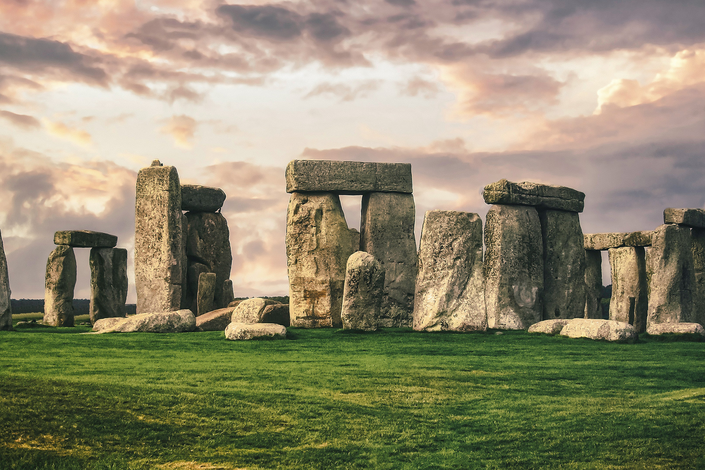

-
The Blue Lagoon
Iceland
Iceland is undoubtedly one of the best travel destinations; it has exponentially increased its interest in recent years. The number 1 destination in Iceland is The Blue Lagoon. Last year, it had a record number of international visitors of 700,000. The Blue Lagoon is a natural geothermal spa sunk in a lava field and is known for its mineral-rich healing waters.
-
Machu Picchu
Perú
Tourists are becoming more and more interested in South America as they look for lesser-known places in the world. Machu Picchu is one of the most recognizable icons of the continent and the tourism figures reflect it. This historic sanctuary, built during the first half of the 15th century, is a must for those who decide to get to know Peru.
-

Stonehenge
UnitedKingdom
This set of historical stone monuments dates from 2000 to 3000 B.C. It is an iconic landmark and one of the UK's best-known symbols and tourist attractions. Since Stonehenge was added to the UNESCO World Heritage list in 1982, annual visitors have skyrocketed to 1.3 million tourists per year.
-
Christ the Redeemer
Brazil
You have probably seen the pictures of your friends with open arms underneath the huge white replica of Christ. The statue is known as Christ the Redeemer and casts its shadow over some 1.8 million visitors per year. In recent years, this has been one of the tourist attractions that has received the most people during religious festivities, passing the enormous number of 14,000 visitors.
-

Acropolis of Athens
Greece
These ancient ruins of Athens hang on the scenic cliff of Greece. Despite ongoing restoration projects, crowds of curious people continue to come to the site year after year. The community is preparing for the large number of 4.5 million international visitors this year.
-
Eiffel Tower
France
Located in the heart of Paris, the most romantic city in the world, the Eiffel Tower has become a universal symbol of travel. A visit to the Eiffel Tower tops many lists of categories, something not surprising considering that some 7 million visitors a year take pictures under the 81-story building. No matter the time you come in, there will always be people admiring this French icon.
-
The Great Wall of China
China
Considered one of the largest man-made structures in the world, the Great Wall of China stretches for more than 21,000 kilometers. Welcoming 10 million tourists every year, it's beneficial to know the best time to visit. Autumn is undoubtedly the most beautiful time to arrive, but unfortunately it is still peak tourist season.
-
The Great Pyramid of Giza
Egypt
It may be surprising to know that a desolate desert in the Middle East has become one of the best tourist attractions in the world, unless you consider that many people desperately want to visit the Great Pyramid of Giza, one of the 7 wonders officers of the ancient world. The tomb that was built around 2500 BC is now responsible for receiving more than 14.7 million visitors per year.
-
Niagara Falls
USA/Canada
Among the most popular tourist attractions in the world are the towering Niagara Falls. They are located on the border of New York and Ontario, Canada, being a massive set of 3 waterfalls. More than 6 million cubic feet of water gushes over the falls every minute. Currently, the site receives 30 million tourists per year.